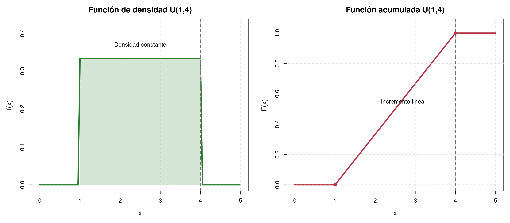
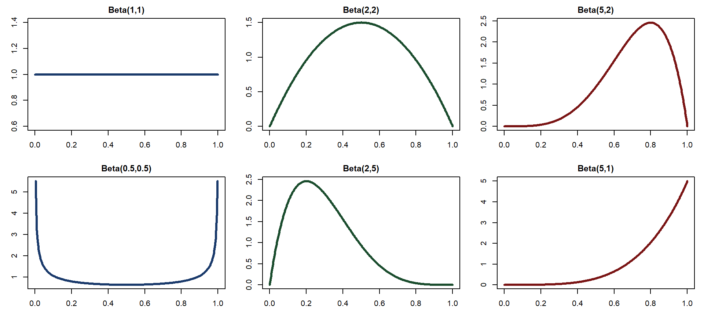
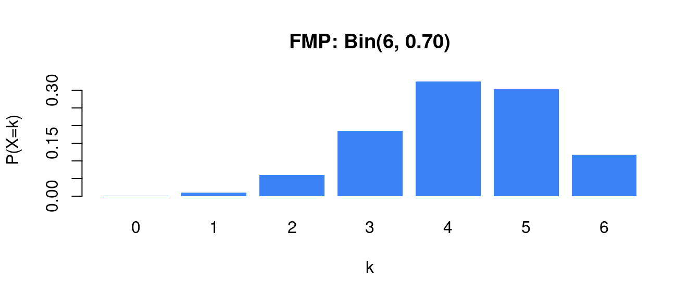
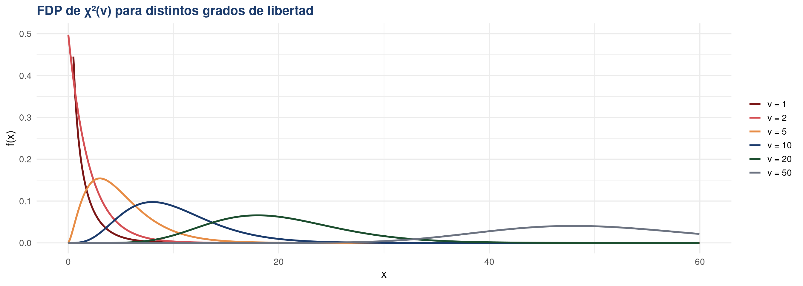
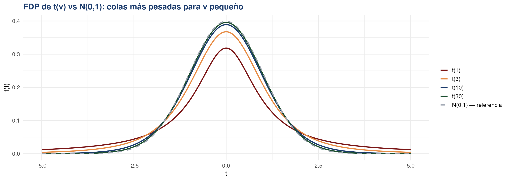
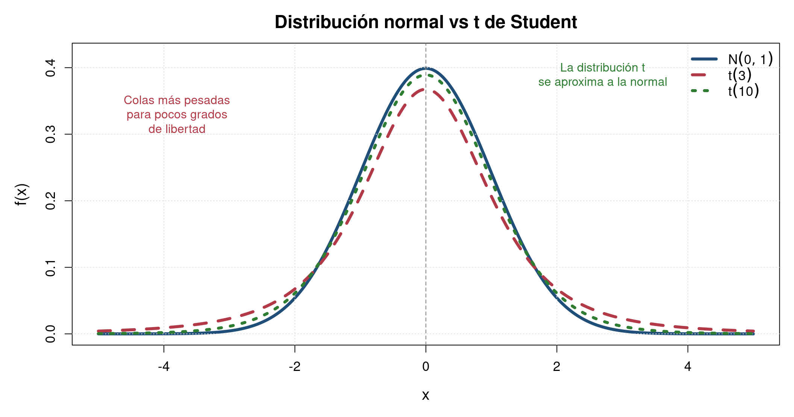

[1] 0.1493486[1] 0.8800827[1] 0.7910937[1] 0.03006053[1] 0.06281207[1] 0.8578343Clase 10: Distribuciones de probabilidad y aplicaciones
Departamento de Estadı́stica, Sede Bogotá
Funciones de Probabilidad y Densidad
FMP, FDP y distribuciones en profundidad
Herramientas matemáticas para cuantificar la incertidumbre
Bioestadística Fundamental — Departamento de Estadística, UNAL Bogotá
Variable aleatoria: \(X:\Omega\to\mathbb{R}\) · Discreta: FMP \(p(x)=P(X=x)\geq 0,\ \textstyle\sum p=1\) · Continua: FDP \(f(x)\geq 0,\ \int f=1\) · FDA: \(F(x)=P(X\leq x)\)
Distribuciones discretas
| Bernoulli(\(p\)) | Éxito/fracaso único. \(p(x)=p^x(1-p)^{1-x}\) |
| Bin(\(n,p\)) | \(k\) éxitos en \(n\) ensayos. \(\binom{n}{k}p^k(1-p)^{n-k}\) |
| Poi(\(\lambda\)) | Eventos raros. \(e^{-\lambda}\lambda^k/k!\) |
| Geo(\(p\)) | Intentos hasta primer éxito. \((1-p)^{k-1}p\) |
| Hiper(\(N,K,n\)) | Sin reemplazo. \(\binom{K}{k}\binom{N-K}{n-k}/\binom{N}{n}\) |
Distribuciones continuas
| \(U(a,b)\) | Densidad constante \(1/(b-a)\) en \((a,b)\) |
| \(N(\mu,\sigma^2)\) | Campana simétrica; \(Z=(X-\mu)/\sigma\) |
| \(\text{Exp}(\lambda)\) | Tiempos de espera; sin memoria |
| \(\text{Gamma}(\alpha,\beta)\) | Tiempo hasta el \(k\)-ésimo evento |
| \(\text{Beta}(\alpha,\beta)\) | Proporciones en \((0,1)\) |
Describir
Tablas, gráficos, tasas, medidas de posición y dispersión.
Estadística descriptiva
Relacionar
Dispersión, correlación, tablas de contingencia y análisis bivariado.
Estadística bivariada
Medir la incertidumbre
Eventos, probabilidad condicional, independencia y Bayes.
Teoría de probabilidad
Cuantificar
Variables aleatorias, FDA, FMP y FDP. Distribuciones discretas.
Variables aleatorias
Modelar
Distribuciones continuas: Uniforme, Normal, Exponencial, Gamma, Beta, \(\chi^2\), \(t\).
Modelos probabilísticos
Hoy tenemos todas las piezas para el siguiente paso: inferencia estadística.
\[p(x) = P(X = x)\] Asigna una probabilidad a cada valor individual. Responde: ¿con qué chance ocurre exactamente \(x\)?
\[F(x) = P(X \leq x) = \sum_{x_i \leq x} p(x_i)\] Acumula toda la probabilidad hasta \(x\). Responde: ¿con qué chance ocurre \(x\) o menos?
La FDA suma la FMP. Y la FMP indicacuánto aumenta la FDA en cada valor, osea, el salto que se da
Distribución Binomial
Decir que una variable sigue una Distribución Binomial significa que estamos contando cuántas veces ocurre un evento en un número fijo de unidades, donde cada unidad solo tiene dos posibles resultados.
\[p(x) = \binom{3}{x}(0.4)^x(0.6)^{3-x}\]
| \(x\) | \(p(x) = P(X=x)\) |
|---|---|
| 0 | \(\binom{3}{0}(0.4)^0(0.6)^3 = 0.216\) |
| 1 | \(\binom{3}{1}(0.4)^1(0.6)^2 = 0.432\) |
| 2 | \(\binom{3}{2}(0.4)^2(0.6)^1 = 0.288\) |
| 3 | \(\binom{3}{3}(0.4)^3(0.6)^0 = 0.064\) |
\[F(x) = \sum_{x_i \leq x} p(x_i)\]
| \(x\) | \(F(x) = P(X \leq x)\) |
|---|---|
| 0 | \(0.216\) |
| 1 | \(0.216 + 0.432 = 0.648\) |
| 2 | \(0.648 + 0.288 = 0.936\) |
| 3 | \(0.936 + 0.064 = 1.000\) |
\(P(X \leq 1) = F(1) = 0.648\); \(P(X = 2) = F(2) - F(1) = 0.936 - 0.648 = 0.288\); \(P(X > 2) = 1 - F(2) = 0.064\)
En un lote de \(n=50\) plantas de café, con \(p=0.15\) de tener roya. Calcule \(P(X=8)\), \(P(X \leq 10)\), \(P(X > 12)\), \(P(X \geq 12)\) y \(P(5 \leq X \leq 12)\).
[1] 0.1493486[1] 0.8800827[1] 0.7910937[1] 0.03006053[1] 0.06281207[1] 0.8578343dbinom(x, n, p): \(P(X = x)\)
pbinom(q, n, p): \(P(X \leq q)\)
pbinom(q-1, n, p): \(P(X < q)\)
lower.tail = FALSE: \(P(X > q)\)
pbinom(q-1,…,FALSE): \(P(X \geq q)\)
pbinom(b) - pbinom(a-1): \(P(a \leq X \leq b)\)
🌿
Germinación de semillas
De \(n=20\) semillas de maíz sembradas en Córdoba, cada una germina con probabilidad \(p=0.85\). ¿Cuántas germinarán?
\(X \sim \text{Bin}(20,\, 0.85)\)
🦠
Plantas con enfermedad
En un muestreo de \(n=50\) plantas de café en Huila, cada planta tiene probabilidad \(p=0.15\) de presentar roya.
\(X \sim \text{Bin}(50,\, 0.15)\)
✂️
Éxito de esquejes en vivero
De \(n=30\) esquejes de aguacate injertados en viveros de Antioquia, cada uno prende con probabilidad \(p=0.70\).
\(X \sim \text{Bin}(30,\, 0.70)\)
Se usa cuando hay \(n\) ensayos independientes, cada uno con probabilidad \(p\) de éxito y dos resultados posibles.
Distribución Poisson
Decir que una variable sigue una Distribución Poisson significa que estamos contando cuántas veces ocurre un evento en un intervalo de espacio, tiempo o área, cuando los eventos aparecen de manera aleatoria.
\[p(x) = P(X = x) = \frac{e^{-\lambda}\,\lambda^x}{x!}, \quad x = 0, 1, 2, \ldots\]
\[F(x) = P(X \leq x) = \sum_{k=0}^{\lfloor x \rfloor} \frac{e^{-\lambda}\,\lambda^k}{k!}\]
No existe fórmula cerrada para \(F(x)\): se calcula sumando términos de la FMP. En R: dpois(x, λ) para la FMP y ppois(x, λ) para la FDA.


Con \(\lambda = 0.3\), la masa se concentra en \(x = 0\): \(P(X=0) = e^{-0.3} \approx 0.741\). Modela eventos muy raros.
La FDA sube casi de golpe: \(F(0) \approx 0.741\), \(F(1) \approx 0.963\). El \(96.3\%\) de las veces ocurre 1 o ningún evento.
Para \(\lambda\) grande, la Poisson se aproxima a una distribución Normal.
Brotes de sigatoka por semana en banano, \(\lambda=4.2\). Calcule \(P(X=3)\), \(P(X \leq 5)\), \(P(X > 6)\), \(P(X \geq 7)\) y \(P(3 \leq X \leq 6)\).
[1] 0.1851654[1] 0.7531429[1] 0.589827[1] 0.132536[1] 0.132536[1] 0.657226dpois(x, lambda): \(P(X = x)\)
ppois(q, lambda): \(P(X \leq q)\)
ppois(q-1, lambda): \(P(X < q)\)
lower.tail = FALSE: \(P(X > q)\)
ppois(q-1,…,FALSE): \(P(X \geq q)\)
ppois(b) - ppois(a-1): \(P(a \leq X \leq b)\)
Si \(X\) es v.a continua con FDP \(f(x)\) y FDA \(F(x)\): \[F(x) = \int_{-\infty}^{x} f(t)\,dt\] \[f(x) = F'(x) \quad \text{(donde existe la derivada)}\]
🦟
Focos de plaga por hectárea
Número de brotes de sigatoka por semana en cultivos de banano en Urabá. Eventos raros en un intervalo definido.
\(X \sim \text{Poi}(\lambda)\), \(\lambda\) = brotes/semana
🌧️
Eventos de granizo por temporada
Número de eventos de granizo que afectan cultivos de flores en la Sabana de Bogotá durante la temporada lluviosa.
\(X \sim \text{Poi}(\lambda)\), \(\lambda\) = eventos/mes
🔬
Colonias bacterianas en muestra
Número de colonias de E. coli encontradas en muestras de agua de riego en cultivos de hortalizas en Cundinamarca.
\(X \sim \text{Poi}(\lambda)\), \(\lambda\) = colonias/mL
Ideal para contar eventos raros en un intervalo de tiempo, espacio o área cuando los eventos son independientes.
Distribución Uniforme
Decir que una variable sigue una Distribución Uniforme significa que todos los valores dentro de un intervalo tienen la misma probabilidad de ocurrir.
Todos los valores en \((a, b)\) tienen la misma probabilidad de ocurrir. La densidad es constante en todo el soporte. — Parámetros: \(a\) (límite inferior), \(b\) (límite superior).
Densidad constante: ningún valor es más probable que otro dentro del intervalo.
\[F(x) = \begin{cases} 0, & x < a \\[4pt] \dfrac{x-a}{b-a}, & a \leq x \leq b \\[8pt] 1, & x > b \end{cases}\]

El tiempo de maduración (días) de una planta de uchuva sigue una \(U(60, 90)\). Calcule \(P(X=72)\), \(P(X \leq 75)\), \(P(X > 80)\), \(P(X \geq 80)\) y \(P(65 \leq X \leq 80)\).
[1] 0.03333333[1] 0.5[1] 0.5[1] 0.3333333[1] 0.3333333[1] 0.5dunif(x, min, max): \(f(x) = 1/(b-a)\)
punif(q, min, max): \(P(X \leq q)\)
lower.tail = FALSE: \(P(X > q)\)
punif(b) - punif(a): \(P(a \leq X \leq b)\)
\(P(X = x) = 0\) siempre.
\(P(X \leq q) = P(X < q)\)
🌻
Época de floración
El inicio de floración del girasol en una variedad puede ocurrir en cualquier día dentro de una ventana de 15 días en Meta.
\(X \sim U(60,\, 75)\) días
💧
Tiempo de activación de riego
Sistema de riego automático programado para activarse en un intervalo fijo en cultivos de cebolla en Pasto.
\(X \sim U(10,\, 30)\) minutos
🌱
Tiempo de germinación
Semillas de uchuva en condiciones controladas germinan con igual probabilidad en cualquier día entre el 5° y el 15° en Boyacá.
\(X \sim U(5,\, 15)\) días
Se usa cuando se conocen los límites del fenómeno pero no hay preferencia por ningún valor dentro del rango.
Distribución Normal
Decir que una variable sigue una Distribución Normal significa que la mayoría de los valores se concentran alrededor de un promedio, y los valores extremos son menos frecuentes. Es la famosa distribución en forma de “campana”.
Variable continua con forma de campana simétrica alrededor de \(\mu\). Parametrizada por la media \(\mu \in \mathbb{R}\) y la varianza \(\sigma^2 > 0\).
Simétrica en \(\mu\) · máximo en \(x = \mu\) · colas asintóticas al eje \(x\).
No tiene forma cerrada. Se calcula estandarizando: \(Z = \dfrac{X - \mu}{\sigma} \sim N(0,1)\) y usando la tabla \(\Phi\).
No existe una fórmula sencilla para calcular directamente la FDA de la normal. Por eso usamos la normal estándar, tablas o un software estadístico como R para calcular.


La FDP es simétrica en \(\mu = 3\) · La FDA cruza \(0.5\) exactamente en \(x = \mu\) · \(\sigma = 7\) produce una campana ancha con alta dispersión.

[1] 0.6827[1] 0.9545[1] 0.9973\[ P(Z \leq z)=\Phi(z) \]
El peso de gulupa en gramos sigue una \(N(\mu=85,\, \sigma=12)\). Calcule \(P(X \leq 80)\), \(P(X > 100)\), \(P(X \geq 90)\) y \(P(70 \leq X \leq 95)\).
[1] 0.3384611[1] 0.3384611[1] 0.1056498[1] 0.3384611[1] 0.6920218dnorm(x, mean, sd): \(f(x)\)
pnorm(q, mean, sd): \(P(X \leq q)\)
lower.tail = FALSE: \(P(X > q)\)
pnorm(b) - pnorm(a): \(P(a \leq X \leq b)\)
\(P(X = x) = 0\) siempre.
\(P(X \leq q) = P(X < q)\)
☕
Peso de granos de café
El peso de granos de café en el Huila sigue una Normal por el efecto combinado de suelo, altitud y manejo.
\(X \sim N(\mu,\, \sigma^2)\)
🌽
Altura de plantas de maíz
La altura de maíz a los 60 días en el Tolima es aproximadamente normal, útil para control de calidad varietal.
\(X \sim N(180\text{ cm},\, 8^2)\)
🌡️
Temperatura corporal de bovinos
Temperatura rectal de bovinos en Córdoba — detectar fiebres y enfermedades comparando contra la Normal de referencia.
\(X \sim N(38.5°\text{C},\, 0.3^2)\)
Aparece cuando muchos factores independientes actúan sobre una variable. El Teorema Central del Límite garantiza su presencia.
Distribución Exponencial
Decir que una variable sigue una Distribución Exponencial significa que estamos modelando el tiempo, distancia o espacio entre eventos que ocurren aleatoriamente.
Modela el tiempo de espera hasta la ocurrencia de un evento, cuando los eventos ocurren de forma independiente a una tasa constante \(\lambda > 0\). — Soporte: \(x \in (0, \infty)\).
Decrece exponencialmente. A mayor \(\lambda\), más rápido decrece la curva.
Forma cerrada, a diferencia de la Normal, no requiere tablas ni software.
\(P(X > x) = e^{-\lambda x}\); \(P(X \leq x) = 1 - e^{-\lambda x}\); \(P(a \leq X \leq b) = e^{-\lambda a} - e^{-\lambda b}\)
Suponga que el tiempo en días, hasta la aparición de una plaga en un cultivo sigue una distribución Exponencial \(X\sim \mathrm{Exp}(\lambda)\). Si ya pasaron 10 días sin aparición de la plaga, la propiedad sin memoria dice que:
\[ P(X > 10 + 5 \mid X > 10) = P(X > 5) = e^{-5\lambda} \]
Haber esperado 10 días sin observar la plaga no cambia la probabilidad de esperar 5 días más.
El riesgo futuro se mantiene igual porque la tasa de aparición \(\lambda\) se asume constante.
Tiempo en horas entre fallas de una bomba de riego sigue una \(\text{Exp}(\lambda=0.08)\). Calcule \(P(X \leq 15)\), \(P(X > 20)\), \(P(X \geq 20)\) y \(P(10 \leq X \leq 30)\).
[1] 0.6988058[1] 0.6988058[1] 0.2018965[1] 0.2018965[1] 0.358611dexp(x, rate): \(f(x) = \lambda e^{-\lambda x}\)
pexp(q, rate): \(P(X \leq q)\)
lower.tail = FALSE: \(P(X > q)\)
pexp(b) - pexp(a): \(P(a \leq X \leq b)\)
\(P(X = x) = 0\) siempre.
\(P(X \leq q) = P(X < q)\)
⚙️
Tiempo entre fallas de maquinaria
Modelar el tiempo (horas) entre fallas consecutivas de una bomba de riego en cultivos de caña en Palmira.
\(X \sim \text{Exp}(\lambda)\), \(E[X] = 1/\lambda\)
🌧️
Tiempo entre lluvias
Tiempo (días) entre eventos de lluvia significativa en zona seca del Caribe colombiano durante el verano.
\(X \sim \text{Exp}(\lambda)\) — sin memoria
🦟
Tiempo de vida de patógenos
Tiempo de sobrevivencia de esporas de Botrytis en condiciones de baja humedad en invernaderos de Bogotá.
\(X \sim \text{Exp}(\lambda)\)
Propiedad clave: sin memoria, el tiempo que ya ha transcurrido no afecta el tiempo restante.
Distribución Gamma
Decir que una variable sigue una Distribución Gamma significa que estamos modelando el tiempo, acumulación o cantidad total necesaria hasta que ocurren varios eventos aleatorios.
Modela el tiempo hasta que ocurren \(\alpha\) eventos a una tasa constante. \(\alpha > 0\) controla la forma y \(\beta > 0\) la escala. — Soporte: \(x \in (0, \infty)\). Función Gamma: \(\Gamma(\alpha) = (\alpha-1)!\) para \(\alpha \in \mathbb{N}\).
\(\alpha=1\) recupera la Exponencial. \(\alpha\) entero = suma de \(\alpha\) variables Exp.
\(\gamma(\alpha, \cdot)\) es la función Gamma incompleta. Sin forma cerrada, se calcula con pgamma() en R.
Casos especiales: \(\text{Gamma}(1, \beta) = \text{Exp}(1/\beta)\); \(\text{Gamma}(n/2,\, 2) = \chi^2_n\)
El tiempo en días hasta la 3ª lluvia sigue una \(\text{Gamma}(\alpha=3,\, \beta=4)\). Calcule \(P(X \leq 10)\), \(P(X > 15)\), \(P(X \geq 15)\) y \(P(8 \leq X \leq 20)\).
[1] 0.4561869[1] 0.4561869[1] 0.2770684[1] 0.2770684[1] 0.5520244dgamma(x, shape, scale): \(f(x)\).
pgamma(q, shape, scale): \(P(X \leq q)\)
lower.tail = FALSE: \(P(X > q)\)
pgamma(b) - pgamma(a): \(P(a \leq X \leq b)\)
\(P(X = x) = 0\) siempre.
\(P(X \leq q) = P(X < q)\)
🌧️
Tiempo hasta lluvias acumuladas
Modelar el tiempo hasta recibir la 3ª lluvia significativa (\(\geq 20\) mm) en un cultivo de arroz en el Llano colombiano.
\(X \sim \text{Gamma}(3, \beta)\)
🐛
Tiempo hasta \(k\) capturas de plaga
Tiempo hasta capturar el 5º insecto plaga en una trampa de feromonas en cultivos de espárrago en el Espinal.
\(X \sim \text{Gamma}(5, \beta)\)
🌱
Acumulación de biomasa
Modelar la acumulación progresiva de biomasa en caña de azúcar hasta alcanzar cierto rendimiento en Valle del Cauca.
\(X \sim \text{Gamma}(\alpha, \beta)\)
Generaliza la Exponencial: modela el tiempo o cantidad acumulada hasta que ocurren \(\alpha\) eventos.
Distribución Beta
Decir que una variable sigue una Distribución Beta significa que estamos modelando una proporción, porcentaje o probabilidad que solo puede tomar valores entre 0 y 1.
Modela proporciones y probabilidades: prevalencia de enfermedades, porcentaje de germinación, eficacia de tratamientos. \(\alpha\) controla el comportamiento cerca de 0; \(\beta\) cerca de 1. — Soporte: \(x \in (0, 1)\). Función Beta: \(B(\alpha,\beta) = \frac{\Gamma(\alpha)\Gamma(\beta)}{\Gamma(\alpha+\beta)}\).
Muy flexible: uniforme (\(\alpha=\beta=1\)), forma de U (\(\alpha,\beta<1\)), campana simétrica (\(\alpha=\beta>1\)), asimétrica (\(\alpha \neq \beta\)).
\(I_x(\alpha,\beta)\) es la función Beta incompleta regularizada. Sin forma cerrada — se calcula con pbeta() en R.
Caso especial: \(\text{Beta}(1, 1) = U(0, 1)\) · Si \(\alpha = \beta\): distribución simétrica alrededor de \(0.5\)

Cobertura vegetal en parcelas del Amazonas colombiano, \(\text{Beta}(2, 5)\). Calcule \(P(X \leq 0.3)\), \(P(X > 0.5)\), \(P(X \geq 0.5)\) y \(P(0.2 \leq X \leq 0.5)\).
[1] 0.579825[1] 0.579825[1] 0.109375[1] 0.109375[1] 0.545985dbeta(x, shape1, shape2): \(f(x)\)
pbeta(q, shape1, shape2): \(P(X \leq q)\)
lower.tail = FALSE: \(P(X > q)\)
pbeta(b) - pbeta(a): \(P(a \leq X \leq b)\)
\(P(X = x) = 0\) siempre.
\(P(X \leq q) = P(X < q)\)
🌿
Cobertura vegetal de parcelas
Modelar la proporción de cobertura vegetal en parcelas del Amazonas. Los valores siempre están entre 0 y 1.
\(X \sim \text{Beta}(2, 5)\)
🦠
Eficacia de un fungicida
Representar la proporción de plantas protegidas tras aplicar un fungicida en cultivos de papa en Nariño.
\(X \sim \text{Beta}(8, 2)\) — alta eficacia
🌻
Porcentaje de germinación
Modelar la tasa de germinación de semillas de girasol en viveros del Valle del Cauca como proporción variable.
\(X \sim \text{Beta}(5, 3)\) — sesgo positivo
Ideal para cualquier variable que sea una proporción: eficacia, cobertura, tasa de supervivencia o porcentaje de daño.
Distribución Chi-cuadrado
Decir que una variable sigue una \(\chi^2(\nu)\) significa que estamos midiendo la suma de cuadrados de variables normales estándar independientes. Es la distribución clave para estimar varianzas y probar ajuste de modelos.
Surge como la suma de \(\nu\) cuadrados de normales estándar independientes: \(X = Z_1^2 + \cdots + Z_\nu^2\). Es un caso especial de \(\text{Gamma}(\nu/2,\, 2)\). — Parámetro: \(\nu\) grados de libertad. Soporte: \(x \in (0, \infty)\).
Asimétrica a la derecha para \(\nu\) pequeño. Se vuelve más simétrica al aumentar \(\nu\).
Función Gamma incompleta regularizada. Sin forma cerrada — se calcula con pchisq() en R.
$P(X x) = $ pchisq(x, df) · Caso especial: \(\chi^2(\nu) = \text{Gamma}(\nu/2,\, 2)\) · Usada en pruebas de bondad de ajuste e inferencia de varianzas

En un estudio de calidad de suelos en Meta, un estadístico calcula un estadístico \(\chi^2 = 12.5\) con \(\nu = 6\) grados de libertad. Calcule \(P(X \leq 12.5)\), \(P(X > 12.5)\) y \(P(5 \leq X \leq 12.5)\).
dchisq(x, df): \(f(x)\) — densidad
pchisq(q, df): \(P(X \leq q)\)
lower.tail = FALSE: \(P(X > q)\) — valor \(p\)
pchisq(b) - pchisq(a): \(P(a \leq X \leq b)\)
qchisq(p, df): valor crítico con prob. \(p\)
🌱
Distribución de plagas por región
Probar si la distribución de cultivos afectados por sigatoka es independiente de la región en el eje bananero.
\(\chi^2\) — prueba de independencia
🌾
Ajuste de distribución de rendimientos
Verificar si el peso de espigas de trigo en Nariño sigue una distribución Normal mediante prueba de bondad de ajuste.
\(\chi^2\) — bondad de ajuste
🧪
Varianza de concentración de nutrientes
Estimar la varianza de la concentración de nitrógeno en muestras de suelo de Cundinamarca con \(n=20\).
\(\chi^2(19)\) — intervalo para \(\sigma^2\)
Es la distribución fundamental para probar asociación entre variables categóricas y para inferencia sobre varianzas poblacionales.
Distribución t de Student
Decir que una variable sigue una \(t(\nu)\) significa que estamos haciendo inferencia sobre una media cuando la varianza poblacional es desconocida. A mayor \(\nu\), más se parece a la Normal estándar.
Surge como cociente \(T = Z / \sqrt{Q/\nu}\) donde \(Z \sim N(0,1)\) y \(Q \sim \chi^2(\nu)\) independientes. Simétrica en 0, con colas más pesadas que la Normal. — Parámetro: \(\nu\) grados de libertad. Soporte: \(t \in (-\infty, \infty)\).
Simétrica en 0. Cuando \(\nu \to \infty\), converge a \(N(0,1)\).
Sin forma cerrada. Se calcula con pt() en R. Por simetría: \(P(T > t) = P(T < -t)\).
Colas más pesadas que \(N(0,1)\) · \(t(\nu) \xrightarrow{\nu\to\infty} N(0,1)\) · Usada en pruebas \(t\) e intervalos de confianza para medias


En un ensayo clínico en Bogotá, se obtiene un estadístico \(t = 2.1\) con \(\nu = 15\) grados de libertad. Calcule \(P(T \leq 2.1)\), \(P(T > 2.1)\), \(P(-2.1 \leq T \leq 2.1)\) y el valor crítico al 95%.
[1] 0.9734724[1] 0.02652763[1] 0.9469447[1] 2.13145[1] 1.75305dt(x, df): \(f(t)\) — densidad
pt(q, df): \(P(T \leq q)\)
lower.tail = FALSE: \(P(T > q)\) — valor \(p\) unilateral
pt(b) - pt(a): \(P(a \leq T \leq b)\) — bilateral
qt(p, df): valor crítico con prob. \(p\)
🌾
Rendimiento con fertilizante
Comparar la media de kg/ha antes y después de aplicar un nuevo abono en 12 parcelas de arroz en el Tolima.
\(T \sim t(11)\) — prueba \(t\) pareada
☕
Peso de granos de café
Estimar la media del peso de granos en una finca del Huila con muestra pequeña (\(n=8\)) y varianza desconocida.
\(T \sim t(7)\) — intervalo de confianza
🐄
Ganancia de peso bovino
Comparar la media de ganancia de peso de dos grupos de bovinos con dietas distintas en Córdoba (\(n=15\) c/u).
\(T \sim t(28)\) — prueba \(t\) de dos muestras
Se usa cuando \(n\) es pequeño y la varianza poblacional es desconocida. Al crecer \(n\), se aproxima a la Normal.
Cuando los parámetros toman valores extremos, algunas distribuciones se aproximan a otra más simple de calcular.
Binomial
→ Poisson
\(n\) grande, \(p\) pequeño
\(\lambda = np\)
Ej: \(n > 100\), \(p < 0.01\)
Binomial
→ Normal
\(np\) y \(n(1-p)\) grandes
\(\mu=np,\;\sigma^2=np(1-p)\)
Ej: \(np \geq 5\) y \(n(1-p) \geq 5\)
Poisson
→ Normal
\(\lambda\) grande
\(\mu=\lambda,\;\sigma^2=\lambda\)
Ej: \(\lambda \geq 30\)
Gamma
→ Normal
\(\alpha\) grande
\(\mu=\alpha\beta,\;\sigma^2=\alpha\beta^2\)
Ej: \(\alpha \geq 30\)
t de Student
→ Normal
Muestra grande
\(t(\nu) \xrightarrow{\nu\to\infty} N(0,1)\)
Ej: \(\nu \geq 30\)
La Normal es el atractor universal, el Teorema Central del Límite explica por qué tantas distribuciones convergen a ella, Lo veremos en la proxima clase.
Ejercicios para resolver en clase
Funciones de probabilidad y densidad
En un ensayo clínico sobre tuberculosis en el Cauca, se seleccionan 6 pacientes. La probabilidad de respuesta positiva al tratamiento es 0.70. Sea \(X\) = número de pacientes que responden.
La hemoglobina (g/dL) en mujeres adultas de Bogotá sigue \(X \sim N(12.8,\; 1.2^2)\). Se considera anemia si \(X < 12\) g/dL.
En un laboratorio de microbiología, el número de colonias de E. coli por placa sigue una distribución de Poisson. Se registraron los siguientes conteos en 10 placas:
3, 1, 5, 2, 4, 3, 6, 2, 4, 3
Información sobre casos semanales de dengue: